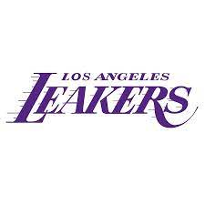
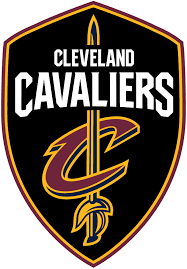

|
The National Basketball Association (NBA) is a professional basketball league in North America. The league is composed of 30 teams (29 in the United States and 1 in Canada) and is one of the four major professional sports leagues in the United States and Canada. It is the premier men's professional basketball league in the world.[1] The league was founded in New York City on June 6, 1946, as the Basketball Association of America (BAA).[2] It changed its name to the National Basketball Association on August 3, 1949, after merging with the competing National Basketball League (NBL).[3] The NBA's regular season runs from October to April, with each team playing 82 games. The league's playoff tournament extends into June. As of 2020, NBA players are the world's best paid athletes by average annual salary per player.[4][5][6] The NBA is an active member of USA Basketball (USAB),[7] which is recognized by the FIBA (International Basketball Federation) as the national governing body for basketball in the United States. The league's several international as well as individual team offices are directed out of its head offices in Midtown Manhattan, while its NBA Entertainment and NBA TV studios are directed out of offices located in Secaucus, New Jersey. In North America, the NBA is the third wealthiest professional sport league after the National Football League (NFL) and Major League Baseball (MLB) by revenue, and among the top four in the world.[8] The Milwaukee Bucks are the reigning champions, having beaten the Phoenix Suns 4–2 in the 2021 Finals. |
|  | The Los Angeles Lakers are an American professional basketball team based in Los Angeles. The Lakers compete in the National Basketball Association (NBA) as a member of the league's Western Conference Pacific Division. The Lakers play their home games at Staples Center, an arena shared with the NBA's Los Angeles Clippers, the Los Angeles Sparks of the Women's National Basketball Association, and the Los Angeles Kings of the National Hockey League.[9] The Lakers are one of the most successful teams in the history of the NBA, and have won 17 NBA championships, tied with the Boston Celtics for the most in NBA history.[10] The franchise began with the 1947 purchase of a disbanded team, the Detroit Gems of the National Basketball League (NBL). The new team began playing in Minneapolis, Minnesota, calling themselves the Minneapolis Lakers.[11] Initially a member of the NBL, the Lakers won the 1948 NBL championship before joining the rival Basketball Association of America, where they would win five of the next six championships, led by star George Mikan.[12] After struggling financially in the late 1950s following Mikan's retirement, they relocated to Los Angeles before the 1960–61 season. |
Best players of this team
1)Lebron James 2)Kobe braynt 3)Magic Johnson 4)Jerry Wesy 5)Jamaal Wilkes |
 |
The Golden State Warriors are an American professional basketball team based in San Francisco. The Warriors compete in the National Basketball Association (NBA), as a member of the league's Western Conference Pacific Division. Founded in 1946 in Philadelphia, the Warriors moved to the San Francisco Bay Area in 1962 and took the city's name, before changing its geographic moniker to Golden State in 1971.[a][b] The club plays its home games at the Chase Center. The Warriors won the inaugural Basketball Association of America (BAA) championship in 1947,[c] and won again in 1956, led by Hall of Fame trio Paul Arizin, Tom Gola, and Neil Johnston. After the trade of star Wilt Chamberlain in January 1965, the team finished the 1964–65 season with the NBA's worst record (17–63). Their rebuilding period was brief due in large part to the Warriors drafting of Rick Barry four months after the trade. In 1975, star players Barry and Jamaal Wilkes powered the Warriors to their third championship, widely considered one of the biggest upsets in NBA history. | Best players of this team 1)Stephen Curry 2)Kevin Durant 3)Wilt Chamberlain 4)Tom Gola 5)Rick Barry |
 |
The Chicago Bulls are an American professional basketball team based in Chicago. The Bulls compete in the National Basketball Association (NBA) as a member of the league's Eastern Conference Central Division.[9] The team was founded on January 16, 1966, and played its first game during the 1966–67 NBA season.[1] The Bulls play their home games at the United Center, an arena on Chicago's West Side shared with the National Hockey League's Chicago Blackhawks. The Bulls saw their greatest success during the 1990s when they played a major part in popularizing the NBA worldwide. They are known for having one of the NBA's greatest dynasties, winning six NBA championships between 1991 and 1998 with two three-peats. All six of their championship teams were led by Hall of Famers Michael Jordan, Scottie Pippen, and coach Phil Jackson. The Bulls are the only NBA franchise to win multiple championships while never losing an NBA Finals series in their history.[10] |
Best players of this team 1)Michael Jordan 2)Scottie Pippen 3)Jerry Sloana 4)Bob Love 5)Derrick Rose |
|  | The Cleveland Cavaliers (often referred to as the Cavs) are an American professional basketball team based in Cleveland. The Cavaliers compete in the National Basketball Association (NBA) as a member of the league's Eastern Conference Central Division. The team began play as an expansion team in 1970, along with the Portland Trail Blazers and Buffalo Braves. Home games were first held at Cleveland Arena from 1970 to 1974, followed by the Richfield Coliseum from 1974 to 1994. Since 1994, the Cavs have played home games at Rocket Mortgage FieldHouse in downtown Cleveland, which is shared with the Cleveland Monsters of the American Hockey League. Dan Gilbert has owned the team since March 2005. | Best players of this team 1)LeBron James 2)Mark Price 3)Brad Daugherty 4)Larry Nance 5)Austin Carr |
 |
The Boston Celtics (/ˈsɛltɪks/ SEL-tiks) are an American professional basketball team based in Boston. The Celtics compete in the National Basketball Association (NBA) as a member of the league's Eastern Conference Atlantic Division. Founded in 1946 as one of the league's original eight teams, the Celtics play their home games at TD Garden, which they share with the National Hockey League's Boston Bruins. The Celtics are regarded as one of the most successful basketball teams in NBA history; the franchise is tied with the Los Angeles Lakers for most NBA Championships won with 17 (accounting for 23.6 percent of all NBA championships since the league's founding) and currently holds the record for the most recorded wins of any NBA team.[10][11] The Celtics are one of the two charter BAA franchises (the other is the New York Knicks) still playing in their original city. | Best players of this team 1)Bill Russell 2)Larry Bird 3)John Havlicek 4)Kevin McHale 5)Dave Cowens |